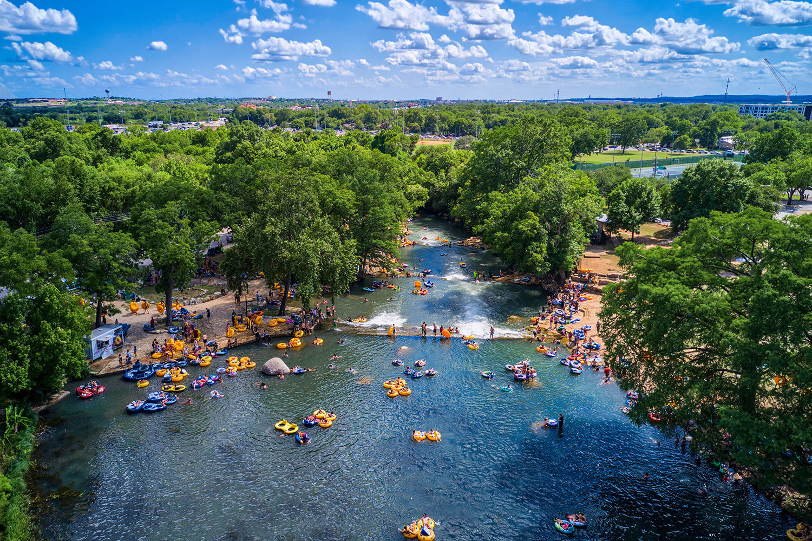

555 Cheatham St, San Marcos, TX 78666 (512) 393-8400 Open Every Day from 6 a.m.-11 p.m.
Rio vista is located on a 14-acre park, which contains a river flowing through. This area is only ten minutes away from Texas State University and located downtown. The San Marcos River flows throughout Rio Vista Park. This beautiful river allows for lots of recreational activities and fun in the sun. Many people like to take their kayaks upstream, but others like to relax in the water.
This is my favorite place to enjoy the sun. The water is always so blue and gushing in a stream that creates one of the most pleasant sounds in the world. The park is not only a place for peace, but it is a place for energy and activity. Many visitors go hiking all throughout the park, some take their kids to the large playground, and some choose to be active in the San Marcos River. At the river access point, people can set their kayaks, canoes, and tubes in the water to set off on an adventure, or simply float in the water.
Families love to come visit Rio Vista Park. The playground offers a large play area for the kids, although they never seem to stay away from the river too long on a warm day. Texas State University students enjoy coming here to relax or cool off with friends in the river. Whether you are a hiker, swimmer, kayaker, runner, or a relaxer, San Marcos locals and college students always find something to do at Rio Vista Park. Your adventure awaits!
Image by Justin Snider